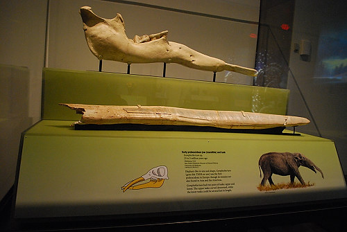

|

More bones. During the Ice Age, colossal mammals roamed Europe, Asia, and North America. From the gigantic mammoth to the massive mastodon, these creatures have captured human imagination since ancient times. Despite their size and ability to adapt to different habitats, these cousins of the elephant eventually went extinct, leaving us an abundant fossil record. This is the jaw of a early probscidean that roamed 23-5 million years ago. |